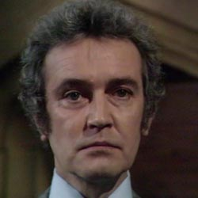

| Home | The Doctors | The Companions | The Villans |
|
|||
Harrison Chase
Harrison Chase is an eccentric millionaire with an obsession for botany. He is a madman with a disdainful attitude toward human life, favouring plant life. Through his vast resources, Chase learns that the seed pods of a Krynoid, an intelligent form of alien plant life, have been found in Antarctica. A collector of rare specimens, Chase becomes obsessed with obtaining a sample, and successfully acquires one. He allows the Krynoid to possess one of his henchmen, who begins to mutate into a Human-Krynoid hybrid. As the monster grows in size and power, Chase too becomes possessed by the Krynoid. Convinced of a future where Krynoids are the dominant life form on Earth, Chase aids the monster in earnest. By this time, the Fourth Doctor and Sarah Jane Smith are trapped on Chase's property. Chase eventually captures Sarah and attempts to kill her by throwing her into a compost shredder. The Doctor stops him, and the two fight, until Chase falls into the shredder and perishes. |